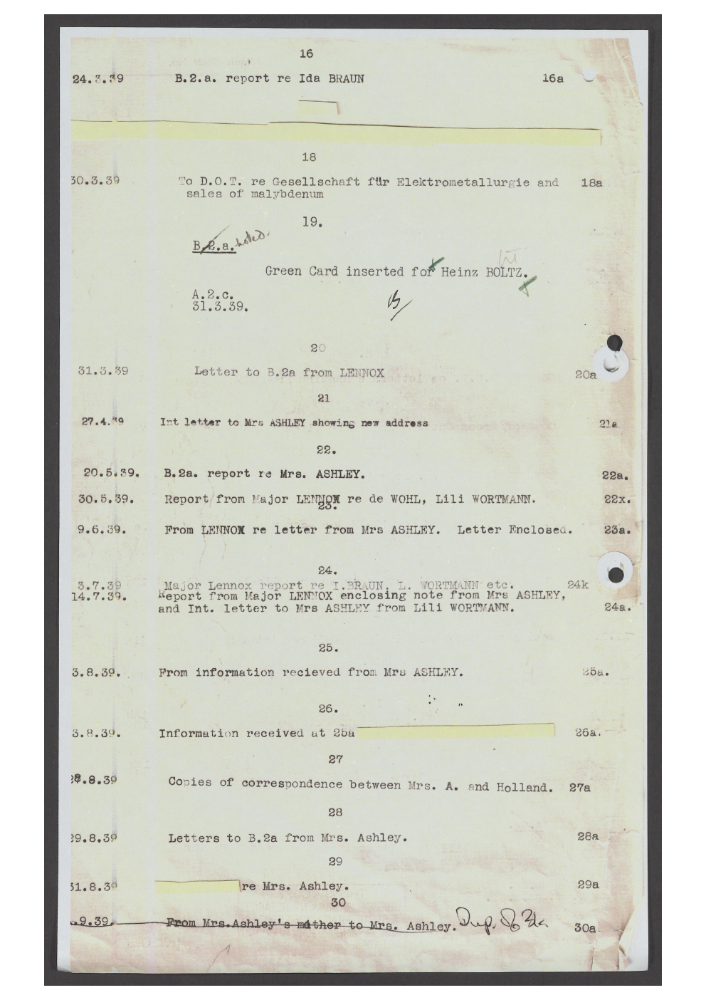
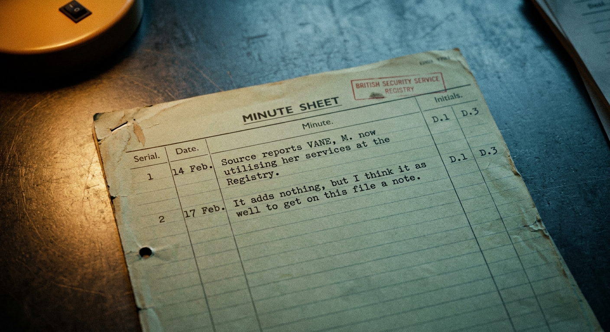
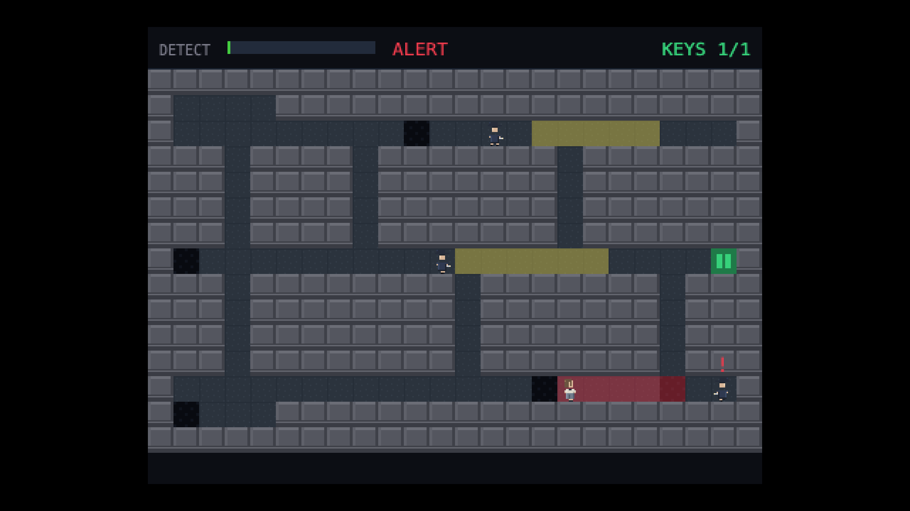
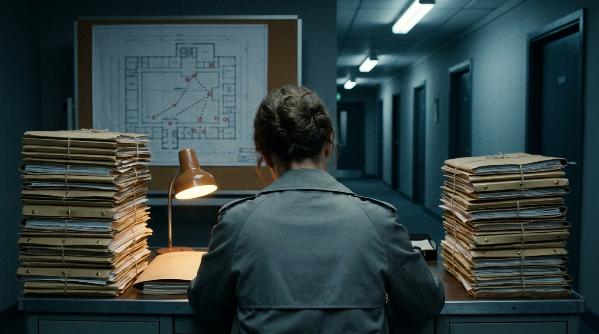

The file said the man was dead, so Margaret Vane closed it.
In my game, that heartbeat is the sound of being seen.
The Gap I Signed
Shipping a game (and a novel) as a studio of one — and the part that couldn't be synthesised.
David Silva · DS Laboratory
Who's talking
15 years — government · fintech · regulated scale. Three books. A studio of one.
I didn't get faster at typing. I got a team.
I'm not here to sell you fear.
I'm here to show you how I got it to the finish line — with my own team.
You can have a powerful team behind you. It can be synthesised.
The one thing that can't is the person who knows what good feels like.
Where it started
It started with a world, not a feature.
I wrote the story first — a le Carré spy novel — and read real declassified MI5 files in the archives. That world became the spec every discipline built against.
A real file → the world it shaped

Real — TNA / declassified
→

Built — the world's own paper
A person read the archives. Then the world was true.
Filed Under No One — ch.1
"There was never enough money to watch everything… So someone had to decide which corners would go dark. These were the acceptable gaps. Margaret signed them off."
"A gap you had signed off was under control. A gap off the plan was a hole in the floor with the lights off."
My method, in one card
THE GAP— a discipline I can't perfect alone
POSTED— a coached specialist, grounded in my experience
MINE— the bar. I keep this. It does not move.
Coached, not prompted — a coach is accountable for the team.
MINEdeterministic · zero runtime dependencies — the bar I would not move

Shown · determinism
Every run is a tape.
Same inputs → same run, every time. A whole playthrough, replayable bit-for-bit. That discipline is a decision, not a default.
Shown · drawn in code · audio
No PNG. That's a draw function.
Nothing in the playfield is a loaded image. And the heartbeat — tempo tracks the detection meter, silent in shadow. A decision about dread.
You make your own gaps
Lure a guard with a knock — or your own footsteps — and open a gap in his watch.
A wall and a cover carry different distances. You pull his attention, then move through the dark you just made. Margaret signed off the gaps; here, you make them.
The rest, in one breath
the in-browser level editora procedural level generatorfiledundernoone.ukthe press kitthe coverthe procedural scorethe in-game art
Twice, I hit a wall for days.
I had the team. The tooling. The solver. And I was stuck.
Wall one — the maps
40–60 minutes a map. Millions of iterations. Every one came out flat.
Same structure, different noise. Tuning the prompt changed nothing — the prompt was never the problem.
The problem wasn't the AI
It was my own tooling.
Solver, validators, linters — all running at once, on every map. A pile of contradicting rules no creative work could survive. And I had no shared vocabulary to say what 'wrong' even meant.
You can't put fun on paper.
Even with the data — event logs, replays, players rating each level FUN · FAIR · DIFFICULTY, 0–10. The numbers help. They don't decide.
The fix
Nine rules. Ignore the solver.
Create the level first — freely — before any technical rule is allowed to decide it can't exist. Gatekeeping that runs too early kills the thing before it's born.
Shown · FEEDBACK.md
"…are those black squares places I can hide?"
— came up twice. The system was correct. The experience was broken. Only a person could tell me.
Wall two — the trailer
Half a day rejecting output — until I saw I wasn't communicating.
The fix — break it into phases, lock each
documents → lock
gameplay treatment → lock
sound → lock
storyboard → lock
→ then assemble — no surprises left.
When it broke, I redid one phase — not the whole thing.
Corners I cut to ship
Capture is instant — no manhunt.
No crawl · no doors · no dogs. Cut on purpose, with reasons — to reach a product, not to polish forever.
I set out to build a game. I built a novel too.
Because I cared about the storyline — I wanted an experience, not just a game.
The book stops at the fence.
The game is the night the book won't narrate.
Filed Under No One — ch.8, the fence
"Her hand is on the wire." — she
"You go over." — you

A person was the sum of their records. Then they struck her off.
Sell the question — never the face.
When you hit a wall, it's almost never the team or the tools.
It's the process.
Slow down · build a shared vocabulary · break it into phases. That's the system you build to overcome.
The studio of one is yours.
But only if you bring a point of view: pick the gaps · coach the team · keep the bar · decide · test · care · ship.
A gap you sign off is under control. A gap you forget is a hole in the floor with the lights off.
I signed mine. The product shipped.
We need creativity — it's what lets us push through the limitations.